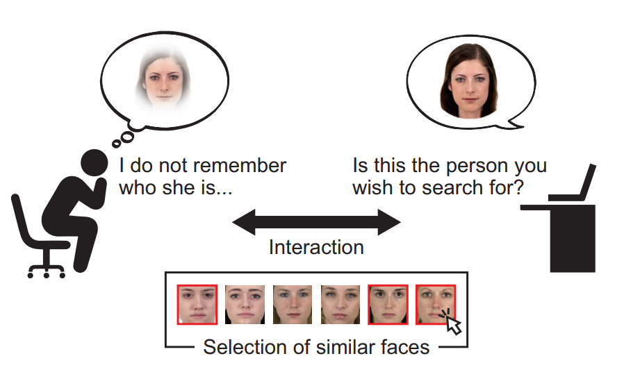
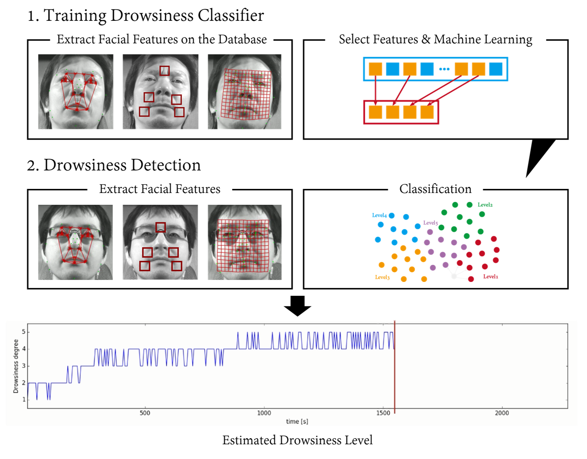
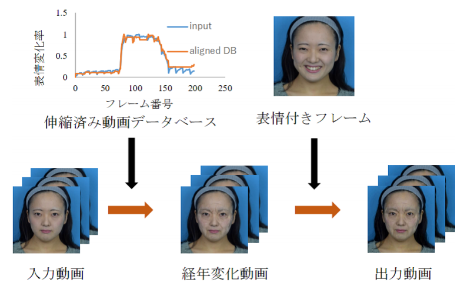

Profile
Short Bio
Yugo Sato received the B.E. degree in department of applied physics and the M.E. degree in department of pure and applied physics from Waseda University, Tokyo, Japan, in 2016 and 2018 under the supervision of Prof. Shigeo Morishima, respectively. He joined Sony Corporation, Tokyo, Japan, in 2018, as R&D engineer where he has been engaged in the research and development of vision system technologies such as image recognition by using deep learning.Research Interest
My research interests lie in Machine Learning and Computer Vision.In particular, I am interested in Deep Learning technologies (especially, image recognition task).
Hobby
Workout. Snowboarding. Visiting temples and shrines in Kyoto. Watching movies and anime. Reading comics. Playing video games.Biography
| Apr. 2021 - | Sony Group Corporation |
| Apr. 2018 - Mar. 2021 | Sony Corporation |
| Apr. 2016 - Mar. 2018 | M.E., Shigeo Morishima Lab., Waseda University Department of Pure and Applied Physics |
| Apr. 2012 - Mar. 2016 | B.E., Shigeo Morishima Lab., Waseda University Department of Applied Physics |
Work Experience
- Internship at Sony Corporation, Computer Vision Course (R&D). Feb. 2017.
Certification
- JDLA Deep Learning for GENERAL
- Python 3 Basic Grammar Certification
- Python 3 Data Analyst Certification
Projects at University

Interactive Face Retrieval Framework for Clarifying User's Visual Memory
Yugo Sato, Tsukasa Fukusato, and Shigeo Morishima.ITE Transactions on Media Technology and Applications. Special Section on Multimedia Retrieval. Journal (Peer-Reviewed). Apr. 2019.
Face Retrieval Human-Computer Interaction Deep Learning Digital Library Paper Code Invited Paper

Perception of Drowsiness based on Correlation with Facial Image Features
Yugo Sato, Takuya Kato, Naoki Nozawa, and Shigeo Morishima.ACM Symposium on Applied Perception (SAP2016). Poster (Peer-Reviewed). July 2016.
Drowsiness Detection Facial Expression Machine Learning Digital Library Paper

表情変化データベースを用いた経年変化顔動画合成
山本晋太郎, サフキン・パーベル, 加藤卓哉, 佐藤優伍, 古川翔一, 森島繁生.Visual Computing / グラフィックスとCAD 合同シンポジウム 2017. Oral (Peer-Reviewed). June 2017.
Age Progression Texture Synthesis Image Processing Digital Library
Publications
Journal
- Yugo Sato, Tsukasa Fukusato, and Shigeo Morishima. "Interactive Face Retrieval Framework for Clarifying User's Visual Memory." ITE Transactions on Media Technology and Applications. Special Section on Multimedia Retrieval. Journal (Peer-Reviewed). Apr. 2019. Digital Library Paper Code Invited Paper
International Conference
- Yugo Sato, Tsukasa Fukusato, and Shigeo Morishima. "Face Retrieval Framework Relying on User's Visual Memory." ACM International Conference on Multimedia Retrieval (ICMR2018). Regular Paper (Peer-Reviewed). June 2018. Digital Library Paper Code
- Yugo Sato, Takuya Kato, Naoki Nozawa, and Shigeo Morishima. "Perception of Drowsiness based on Correlation with Facial Image Features." ACM Symposium on Applied Perception (SAP2016). Poster (Peer-Reviewed). July 2016. Digital Library Paper
Domestic Conference
- 佐藤優伍, 福里司, 森島繁生. "印象選択による対話型画像検索システムの提案." IIEEJ Visual Computing Workshop (VC Workshop 2017). Oral. Dec. 2017.
- 山本晋太郎, サフキン・パーベル, 加藤卓哉, 佐藤優伍, 古川翔一, 森島繁生. "表情変化データベースを用いた経年変化顔動画合成." Visual Computing / グラフィックスとCAD 合同シンポジウム 2017. Oral (Peer-Reviewed). June 2017. Digital Library
- 山本晋太郎, サフキン・パーベル, 加藤卓哉, 佐藤優伍, 森島繁生. "表情の対応付けに基づくデータドリブンな経年変化顔動画合成." The 23rd Symposium on Sensing via Image Information (SSII2017). Poster (Peer-Reviewed). June 2017.
- 山本晋太郎, サフキン・パーベル, 佐藤優伍, 加藤卓哉, 森島繁生. "笑顔動画データベースを用いた顔動画の経年変化." The 79th National Convention of IPSJ. Oral. Mar. 2017. Digital Library Paper
- 佐藤優伍, 加藤卓哉, 野澤直樹, 森島繁生. "顔の変化による眠そうな顔の認知." 21st JFACE Annual Conference (Forum Kaogaku 2016). Oral. Nov. 2016. Digital Library
- 佐藤優伍, 加藤卓哉, 野澤直樹, 森島繁生. "顔形状の左右非対称性に基づくドライバーの眠気検出精度の改善." The 19th Meeting on Image Recognition and Understanding (MIRU2016). Poster. Aug. 2016.
- 佐藤優伍, 野澤直樹, 加藤卓哉, 森島繁生. "眠気変動との相関に基づく顔画像特徴を用いたドライバーの眠気検出." The 22nd Symposium on Sensing via Image Information (SSII2016). Poster (Peer-Reviewed). June 2016.
- 佐藤優伍, 野澤直樹, 森島繁生. "顔画像特徴と眠気の相関に基づくドライバーの眠気検出." The 78th National Convention of IPSJ. Oral. Mar. 2016. Digital Library Paper Student Encouragement Award
- 佐藤優伍. "最適な特徴量選択による顔画像からの眠気検出." The 15th Visual Information Processing Camp (VIP2015). Poster. Sep. 2015.
Book
-
車載センシング技術の開発とADAS、自動運転システムへの応用, 第8章 第2節 顔表情変化に基づくドライバの眠気度合推定と眠気検出技術.
佐藤優伍, 森島繁生.
Technical Information Institute Corporation. No. 1896, pp. 410-418. ISBN: 978-4-86104-658-2. May 2017.
Link Amazon
Award
- The 78th National Convention of IPSJ. Student Encouragement Award. Mar. 2016. Link
Patent
- "情報処理装置、情報処理方法、及び、プログラム." WO/2023/189838. WIPO
- "情報処理装置、情報処理方法および情報処理プログラム." WO/2022/118536. WIPO
- "情報処理装置、情報処理方法、およびプログラム." WO/2022/009552. WIPO
- "情報処理装置、情報処理方法及びプログラム." WO/2020/174808. WIPO
- "情報処理装置、および情報処理方法、並びにプログラム." WO/2020/170851. WIPO
- "情報処理装置、情報処理方法、および記録媒体." WO/2020/166351. WIPO
- "操作パターンを制御する情報処理装置." WO/2020/162169. WIPO
- "情報処理装置、情報処理方法およびプログラム." WO/2020/110547. WIPO
- 3 patent applications pending.